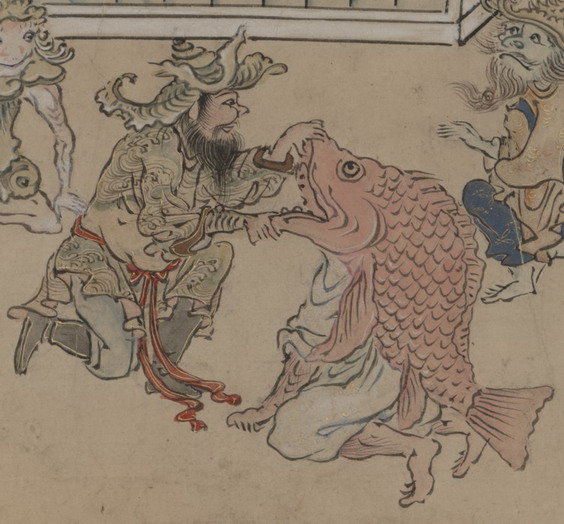

魚の化物。鯛と思われる。体は人間、頭部は魚の全身で、その胴と尾は体の背についている。白い衣をまとい、ひざまづいている。口を大きく開けている。
出典：親書誌：U426_nichibunken_0151：武家はんじょう；ブケハンジョウ／日付：2010／資源識別子：U426_nichibunken_0151_0007_0000
Copyright (c)2010- International Research Center for Japanese Studies, Kyoto, Japan. All rights reserved.